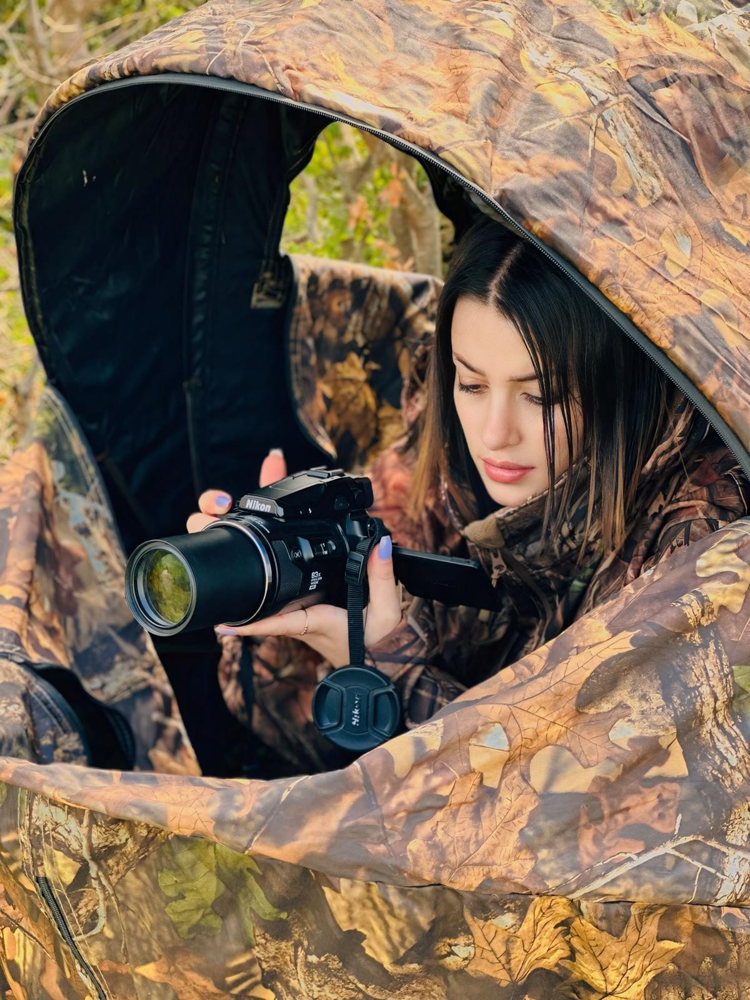

Shireen Bou Rafoul: From valley to valley, the hunters couldn’t stop her!
She loves hunting and considers it part of her identity. But when the choice is between a hunting trip and a mission to rescue a bird, she chooses anti-poaching work. The director of the Anti-Poaching Unit (APU) tells Sayd about the moments from the field that stay with her: a wing trapped beneath a stone, a stork resting its head on her hand, and a kestrel that regained its sight and its freedom.